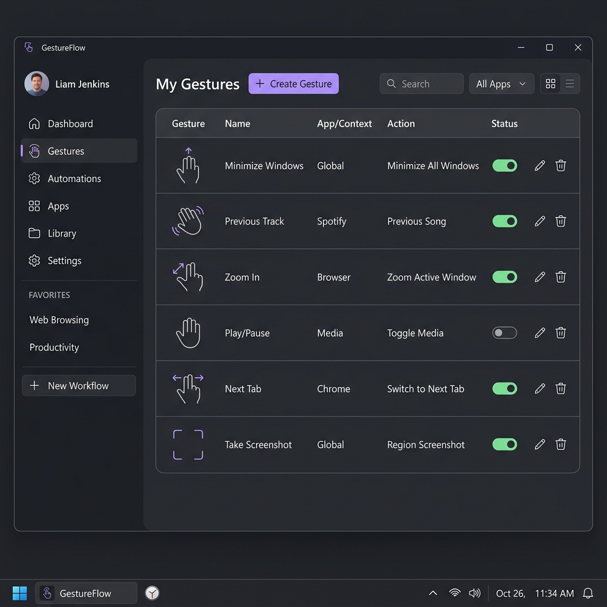

Replace complicated shortcuts. Tap your modifier keys, draw shapes directly on your screen with your mouse or trackpad, and instantly trigger system commands—completely offline.

GestureFlow runs directly in your Windows background tray to execute actions instantly.
No account logins, no cloud APIs, and no telemetry data collections. Your gesture coordinates and automated paths are stored locally in an SQLite file.
Optimized for laptop touchpads. Simply tap the Ctrl, Shift, or Alt key twice, hold left-click to draw, and release. No awkward shortcut keys required.
Train the engine by drawing your shape 3 times. Overlays previous attempts in semi-transparent layers so you draw shapes uniformly and reliably.
Trigger actions like opening URLs, starting files/apps, adjusting system volume, monitor brightness, typing macros, or running scripts.
Setup a gesture language on your laptop in under 2 minutes.
Download the standalone GestureFlow.exe binary. It is a portable app containing PySide6, Python, and the gesture hook modules inside a single executable file.
SmartScreen Warning: Because the binary is self-compiled and unsigned, Windows Defender may show a pop-up on first run. Click "More Info" and then "Run anyway".
Go to the Add Gesture tab inside the application:
Minimize the application to your background system tray.
You don't need to manually configure Windows scripts to ensure it runs every time you open your laptop.
Everything you need to know about the application execution.
Yes. GestureFlow is 100% free and open-source under the MIT license. It runs completely offline inside a sandboxed Python runtime. No information or analytics leave your local PC.
This is standard behavior for all unsigned executables packaged using PyInstaller. Because the application utilizes global hooks to detect the double-tap triggers, Windows is cautious. You can review the full open-source codebase on our GitHub repository to confirm its safety and compile the executable yourself using our build script.
GestureFlow is extremely lightweight, drawing less than 30MB of RAM while resting minimized inside your Windows system tray, and consuming 0% CPU when not actively drawing.
Double-click the GestureFlow tray icon to open the dashboard. On the table, you will see ✏️ Edit and 🗑️ Delete buttons next to each gesture. Click Edit to open a modal dialog to modify mapping details, or Delete to remove it completely.
Ditch key combinations. Design your own custom visual language for commands.
Download for Windows (10/11)